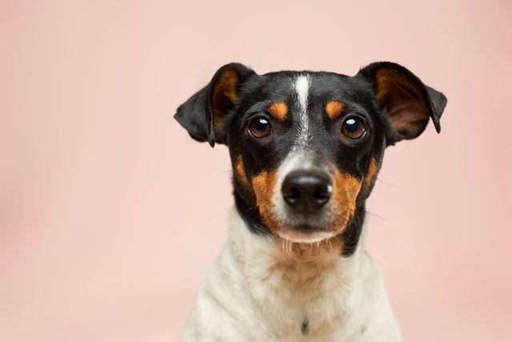
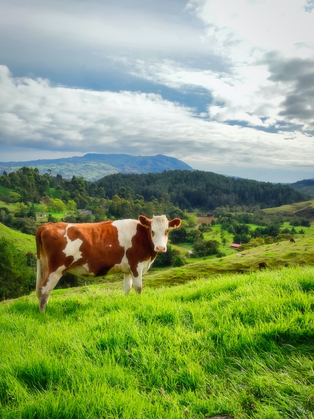

Dogs

The dog or domestic dog (Canis familiaris[4][5] or Canis lupus familiaris[5]) is a domesticated
descendant of the wolf, and is characterized by an upturning tail. The dog is derived from an ancient,
extinct wolf,[6][7] and the modern wolf is the dog's nearest living relative.[8] The dog was the first
species to be domesticated,[9][8] by hunter–gatherers over 15,000 years ago,[7] before the development
of agriculture.[1] Due to their long association with humans, dogs have expanded to a large number of
domestic individuals[10] and gained the ability to thrive on a starch-rich diet that would be inadequate
for other canids.[11]
The dog has been selectively bred over millennia for various behaviors, sensory capabilities, and
physical attributes.[12] Dog breeds vary widely in shape, size, and color. They perform many roles for
humans, such as hunting, herding, pulling loads, protection, assisting police and the military,
companionship, therapy, and aiding disabled people. Over the millennia, dogs became uniquely adapted to
human behavior, and the human-canine bond has been a topic of frequent study.[13] This influence on
human society has given them the sobriquet of "man's best friend".[14]
Cat

The cat (Felis catus) is a domestic species of small carnivorous mammal.[1][2] It is the only
domesticated species in the family Felidae and is often referred to as the domestic cat to distinguish
it from the wild members of the family.[4] A cat can either be a house cat, a farm cat or a feral cat;
the latter ranges freely and avoids human contact.[5] Domestic cats are valued by humans for
companionship and their ability to kill rodents. About 60 cat breeds are recognized by various cat
registries.[6]
The cat is similar in anatomy to the other felid species: it has a strong flexible body, quick reflexes,
sharp teeth and retractable claws adapted to killing small prey. Its night vision and sense of smell are
well developed. Cat communication includes vocalizations like meowing, purring, trilling, hissing,
growling and grunting as well as cat-specific body language. A predator that is most active at dawn and
dusk (crepuscular), the cat is a solitary hunter but a social species. It can hear sounds too faint or
too high in frequency for human ears, such as those made by mice and other small mammals.[7] Cats also
secrete and perceive pheromones.[8
Cow

Cattle (Bos taurus) are large domesticated bovines. They are most widespread species of the genus Bos.
Adult females are referred to as cows and adult males are referred to as bulls.
Cattle are commonly raised as livestock for meat (beef or veal, see beef cattle), for milk (see dairy
cattle), and for hides, which are used to make leather. They are used as riding animals and draft
animals (oxen or bullocks, which pull carts, plows and other implements). Another product of cattle is
their dung, which can be used to create manure or fuel. In some regions, such as parts of India, cattle
have significant religious significance. Cattle, mostly small breeds such as the Miniature Zebu, are
also kept as pet